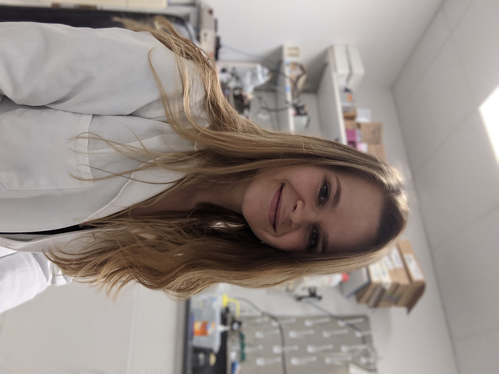
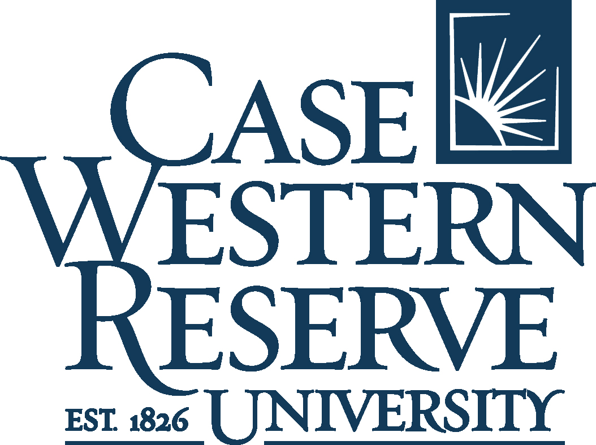

Welcome!
This is the Fall 2021 syllabus for PQHS / CRSP / MPHP 431: Statistical Methods in Biological & Medical Sciences at Case Western Reserve University with Professor Thomas E. Love.

Working With This Document
- This document includes multiple sections. Use the table of contents on the left side of the screen to navigate.
- At the top of the document, click the icons to:
- toggle the table of contents sidebar,
- search the document,
- change the size, font or color scheme of the page, and
- download a PDF or Kindle (EPUB) version of the entire document.
- The document will be updated occasionally. The version indicates the most recent update time.
Who, When and Where?
- The course instructor is Professor Thomas E. Love.
- Email him at Thomas dot Love at case dot edu if you have any questions before class.
- There are nine teaching assistants helping with the course this semester.
- The course is given on Tuesdays and Thursdays from 1:00 to 2:15 PM Eastern Time, in Room E321-323 (the Alice Room) of Robbins Hall, within CWRU’s School of Medicine, starting on 2021-08-24.
Main Course Web Site
The main course web site is found at https://thomaselove.github.io/431/.
This includes everything you need for the course, including links to:
- The 431 Syllabus (this document)
- Dr. Love’s Course Notes
- The Course Calendar, which is the final word for all deadlines and assignments
- The Calendar also links to materials for each class, including presentation slides and announcements
- Data (and Code) for the course’s assignments, presentations, and notes
- Readings and Supplemental Materials that we’ll review during the course
- Our Piazza discussion forum for questions and answers
- Our Canvas page for turning in assignments and downloading recordings.
- A Contact Us page where you can get complete information about how to get help in this course from Dr. Love and the Teaching Assistants.
Getting Started
What Do I Need To Buy?
You need to buy a book, specifically David Spiegelhalter’s The Art of Statistics, which was first published by Penguin in March 2019 (and February 2020) in the UK and then by Basic Books in the US in September 2019. You can purchase any of the available versions (hard-cover, paperback or e-reader) online or in your local bookstore for about $20.
Everything else is free, and is described in detail in the rest of this syllabus or on the course website.
“Welcome to 431” Survey
Many of you will complete this before class begins, but if you haven’t, please fill out the Welcome to 431 Survey at https://bit.ly/431-2021-welcome-survey to help us get to know you a little better.
- Note that you must log into Google via your CWRU account in order to access the survey.
- The survey should take 15-20 minutes to complete, and we encourage you to complete it as soon as you can.
Getting Help with 431
Data science and statistical programming can be difficult. Computers are stupid and little errors in your code can cause hours of frustration (even if you’ve been doing this stuff for years!). You shouldn’t spend more than 15 minutes struggling with anything in this class without asking for help.
Once the course begins, you have several ways to get help from us:
Piazza is the place to ask questions
- We will use Piazza this semester to facilitate questions and answers. We’ll be conducting all class-related discussion there, instead of via email.
- Find our class page at: https://piazza.com/case/fall2021/pqhs431/home. If you’re successfully enrolled in the class, you should be able to sign up immediately.
- The quicker you begin asking questions on Piazza (rather than via emails), the quicker you’ll benefit from the collective knowledge of your classmates and instructors.
- We encourage you to ask questions when you’re struggling to understand anything related to the class, and you can even do so anonymously.
- You’ll also be able to help your colleagues by answering their questions (and you’ll get some class participation credit for doing so), as well.
- We will use Piazza for all questions except questions about Quizzes. We’ll give you special instructions for Quizzes.
In addition, there are many, many online resources to help you learn R beyond those we provide.
- Building internet searches (“googling”) effectively is an important skill that requires practice. Don’t be afraid to use search engines to figure out how to code things in R, for example.
- The RStudio Community is a forum specifically designed for people using RStudio and the tidyverse (and that will be you.)
Virtual TA Office hours provide one-on-one help
You are strongly encouraged to visit TAs during office hours that are convenient for you, whenever you need help with the course. This is the best way to get one-on-one help, or try out a new idea.
- Teaching Assistant (TA) office hours will be held via Zoom, beginning 2021-08-29.
- The schedule for TA office hours appears on the Course Calendar, and on our Contact Us page.
- Office Hours are held for your benefit. Please visit the TAs, especially if you have questions about how to do things in R, or about the content of the class slides or course notes. They’re volunteering their time to help you, and most of them have been in your shoes in previous years. They want to help you!
- More information on the TAs is posted below.
Meeting with Professor Love
Professor Love does not hold regular office hours. He will arrive 10 minutes before each class, and stay afterwards, as well, to address any student concerns that can be addressed in that setting.
- If you have any unique concerns about the course, need special accommodations or have any other issues you want to discuss with Professor Love specifically, please email him (Thomas dot Love at case dot edu) and he’ll respond as quickly as possible.
- Remember that questions about course materials are best asked through Piazza or at TA Office Hours.
How We’ll Use Canvas
We’ll use the Canvas platform for (only) two things:
- turning in assignments
- providing information about (and maintaining recordings of) our Zoom sessions, as they occur. While the plan is for essentially all class sessions this semester to be conducted in person, we will also provide Zoom recordings for special pre-recorded sessions as they arise.
Visit https://canvas.case.edu/ to log in and see what’s available there.
In Case of Emergency
If you need to miss a class session, or even two, just review the materials and move on, and please feel encouraged to ask for help.
If an emergency arises that will keep you from timely completion of work that has a deadline, like a lab, minute paper, or the like, send an email directly to Dr. Love saying the following:
I have an emergency that will keep me from completing (list things you’re worried about completing) in a timely fashion. I will contact you again when I am able to make plans.
- Dr. Love will respond with “OK” and temporarily excuse you from things until you send a “re-connection” email to make plans for making up the work you missed, at which time he’ll evaluate the situation and together you can make that plan. At no time do you owe us any information about your health or the nature of the emergency.
Learning During a Pandemic
The CWRU Return to Campus website is found at https://case.edu/return-to-campus/.
Life is not “normal” right now. None of us are really okay. We’re all just pretending.
You most likely know people who have lost their jobs, have tested positive for COVID-19, have been hospitalized, or perhaps have even died. You all have increased (or possibly decreased) work responsibilities and increased care responsibilities - you might be caring for extra people (young and/or old!) right now, and you might be facing uncertain job prospects.
I’m fully committed to making sure that you learn everything you were hoping to learn from this class! I will make whatever accommodations I can to help you finish your labs, do well on your quizzes and projects, and learn and understand the class material. Under ordinary conditions, I am somewhat flexible and lenient with grading and course expectations when students face difficult challenges. Under pandemic conditions, that flexibility and leniency is intensified. If you tell me you’re having trouble, I will not judge you or think less of you. I hope you’ll extend me the same grace.
You never owe me personal information about your health (mental or physical). You are always welcome to talk to me about things that you’re going through, though. If I can’t help you myself, I may know somebody who can.
If you need extra help, or if you need more time with something, or if you feel like you’re behind or not understanding everything, do not suffer in silence! Talk to us! We will work with you. I promise.
I want you to learn lots of things from this class, but I primarily want you to stay healthy, balanced, and grounded during this crisis.
Thanks to Andrew Heiss for a lot of the better words here.
Is COVID-19 part of the class?
The answer is, essentially, no.
Professor Love expects to provide some resources and reactions related to the news on COVID-19 and the presentation of visualizations and models for the pandemic. He may provide you with some links to outside resources, but
- we will use no COVID-19 data in the course notes for examples, nor in the lab assignments
- nor will we consider any 431 projects that make use of COVID-19 data.
Course Description
PQHS 431 (cross-listed as CRSP 431 and MPHP 431) is the first half of a two-semester sequence (with 432) focused on modern data analysis and advanced statistical modeling, with a practical bent and as little theory as possible. We emphasize the key roles of thinking hard, and well, about design and analysis in research.
The course is formally titled Statistical Methods in Biological & Medical Sciences, Part 1. A more accurate title is Data Science for Biological, Medical or Health Research.
We’ll learn about managing and visualizing data, building models and making predictions, and other data science activities. This highly applied course focuses on modern tools for learning from data. We’ll learn a lot of R, and we’ll use RStudio and R Markdown as tools to help make R work better, and help perform our research in rigorous and replicable ways.
Course Objectives
During the 431-432 sequence, students will:
- Use modern data science tools to import, tidy/manage, explore (through transformation, visualization and modeling) and communicate about data.
- Think hard and well about rigorous design and analysis in scientific research.
- Gain sufficient background in the practical issues regarding linear and generalized linear models to give you a starting place for meaningful applied work, particularly in terms of making comparisons to address general types of statistical and analytic questions (exploratory, predictive, inferential, and causal, in particular.)
- Learn about the importance of replicable research, and develop facility and practice in open source tools for doing it.
- Complete a series of assignments designed to help you demonstrate what you’ve learned.
- Program (“Code”) in R sufficiently to accomplish the tasks above, with enough self-sufficiency afterwards to be able to debug and use new R tools without substantial troubleshooting help. What separates “doing data science” from “doing data analysis” is programming.
Key Topics in 431 and 432
This is NOT a course in mathematical statistics or statistical inference. It’s far more applied than that.
- Exploratory Data Analysis: “All graphs are comparisons” including data exploration, statistical graphics and more general visualization of information.
- Placing biological, medical and health research questions into a statistical framework.
- Study Development - making choices in designing and executing the collection and aggregation of data.
- Data Handling - including important issues in importing, tidying and transforming data, as well as methods for dealing with missing data, including imputation.
- Statistical Comparisons: “All of statistics are comparisons” - including methods for discrete and continuous variables: intervals, assumptions, some thoughts on statistical power, and the bootstrap, design of visualizations and models for rates, proportions and contingency tables.
- The proper and rigorous use of multi-predictor models for continuous and discrete data, including…
- Fitting, evaluating, and interpreting linear and generalized linear models.
- Prediction and validation.
- Critical role of graphics, including diagnostics and residual analysis.
- Model choice, including variable selection, shrinkage and model uncertainty.
- Dealing with categorical predictors and interactions meaningfully.
- Causal inference using regression: controlling for covariates meaningfully.
- Using R and RStudio to make all of the things above happen; with particular emphasis on doing replicable research and using Markdown to document the work.
The 431 course is split in two parts.
Part A (Classes 1-17, roughly) is mostly about R, Visualizing Data and Making Comparisons.
Project A is focused on the material from this part of the course.
- Exploratory Data Analysis
- Descriptive Numerical and Graphical Summaries
- Distributions, specifically the Normal
- Histograms and their cousins
- Scatterplots and related tools from correlation and linear regression
- Exploring Data with the Tidyverse, Getting Up To Speed with R
- Visualizing Data with
ggplot2
- Data Transformation and
dplyr
- Using scripts and projects, Building Code
- Dealing with Missing Data
- Estimation and Inference for Means and Proportions (especially)
- Confidence Intervals
- Design Implications: Matched vs. Independent Samples
- Hypothesis Testing Strategies and why significance isn’t so helpful
- Cross-Tabulations
- Randomized Trials vs. Non-Randomized Studies
Part B (which starts around Class 18) is about Building Multiple Linear Regression Models.
Project B also incorporates material from this part of the course.
- Estimation and Inference using Ordinary Least Squares
- Simple and Multivariate Linear Regression Models
- Building Prediction Models, and Validating Them
- Categorical Variables, Analysis of Variance
- Analysis of Covariance
- Residual and Influence Analyses
- Foundations of Model / Feature / Variable Selection
- What you’ve learned in the past and how it wasn’t so helpful
What We Expect You To Know Already
Not much.
Useful prior experience includes training/experience in statistics, coding/programming and biology/biomedical science. We expect most people will have some experience in one or two of these areas, but very few will have all three.
- Some students have lots of prior training in statistics. But there are many students in the class with no statistical training at all that they use regularly. We assume only that everyone knows what an average is, and has some sense of why statistics might be useful to them in their chosen field.
- Some students have lots of prior coding and programming experience, including experience with R. Some have never written a line of code in their life. We assume only that everyone is willing to learn how to do modern work with data, and that means writing computer code, but that some people will be starting from nothing.
- Some students have lots of prior experience with biological and biomedical science, and know a lot of useful things in those areas which relate directly to our work. Others have zero experience in this area, and will learn a lot from their colleagues. We assume only that everyone is willing to learn, and to put in some effort to do so.
People succeed in this course with a wide range of backgrounds and a common interest in using data effectively in research related to biology, health or medicine. There will be multiple people in the class who are years away from their last statistics class. We expect the majority of students will have no prior experience using R, or any meaningful recollection of using statistical software.
The pace can be brisk at times, but all CWRU students who feel up to it are welcome, regardless of their field of study or prior experience.
Why We Teach 431 Like This
Dr. Love has a lot of thoughts on this issue, but you may prefer to hear from other people on the subject. So here are a few references that have guided our recent thinking.
- A Guide to Teaching Data Science by Stephanie C. Hicks, Rafael A. Irizarry (pdf)
- … our (case-study) approach (in a graduate-level, introductory data science course) teaches students three key skills needed to succeed in data science, which we refer to as creating, connecting, and computing.
- Data Visualization on Day One: Bringing Big Ideas into Intro Stats Early and Often by Xiaofei Wang, Cynthia Rush, Nicholas Jon Horton (pdf)
- 50 Years of Data Science by David Donoho in the Journal of Computational and Graphical Statistics, 2017.
- Why You Should Master R (Even if it might eventually become obsolete) blog post from Sharp Sight, 2016-12-27
- Teaching R to New Users - From tapply to the Tidyverse by Roger D. Peng, which is also available as a YouTube Video
- Teach the Tidyverse to Beginners and a related post on teaching
ggplot2, specifically from David Robinson. There is also a related video from rstudio::conf 2018.
- Video from Hadley Wickham, You can’t do data science in a GUI, 2018 in Chicago.
Professor Love

Thomas E. Love, Ph.D.
Hi. I am Thomas E. Love, Ph.D. and I have at least three different jobs.
- I am a Professor in the Departments of Medicine and Population & Quantitative Health Sciences at Case Western Reserve University. I teach three courses per year there (PQHS 431, 432 and 500) and also lead the Health Care Analytics track of the MS program in Biostatistics.
- I direct the Biostatistics and Data Science Division at the Population Health Research Institute and at the Center for Health Care Research & Policy, which are jointly supported by The MetroHealth System and by CWRU.
- For ten years, I was the (founding) Data Director for Better Health Partnership, an alliance of people who provide, pay for and receive care in Northeast Ohio. I now serve as Chief Data Scientist there.
- I am a Fellow of the American Statistical Association, and have won numerous awards for my teaching and my research, including the 2018 John S. Diekhoff Award for Graduate Teaching from CWRU.
- I have been teaching at CWRU since 1994, and have taught every manner of CWRU student over the years, especially students in biostatistics, medicine, and management.
In research, I use statistical methods to look at questions in health policy and in particular the provision of health services. I mostly work with observational data, rather than data that emerge from randomized clinical trials, and I have a special interest in working with data from electronic health records.
If you want to see a pretty complete list of my publications, knock yourself out.
I hold degrees from Columbia University in the City of New York and from the University of Pennsylvania. My dissertation adviser was Paul Rosenbaum. I am married to a brilliant woman who is an attorney at GE Lighting (a Savant company), and we have two terrific sons, one a recent graduate of the University of Pittsburgh, and the younger a sophomore at Columbia University this Fall. I live in Shaker Heights. I also sing and act occasionally in community theater.
Email
- Thomas dot Love at case dot edu (for matters related to grades or individual concerns)
- Professor Love is best reached via email in an emergency.
Offices
- Wood WG-82J on the ground floor of the Wood building (Tuesday and Thursday afternoons)
- Rammelkamp R-229A at MetroHealth Medical Center (Fridays)
At other times, Professor Love works from his home in Shaker Heights.
Professor Love is available for the 10 minutes before and approximately 20 minutes after each class and otherwise by appointment (send email to schedule).
Teaching Assistants
Most of this year’s stellar group of teaching assistants have been in your shoes - they’ve taken the course in the past, and they enjoyed it enough to come back for more. They are volunteering their precious time and energy to help make the course happen, and we couldn’t be more delighted to welcome you to the course. All office hours and all teaching assistant work will be done remotely.
There is a lot to learn in this class. Don’t suffer in silence - talk to us! As mentioned earlier, you shouldn’t spend more than 15 minutes struggling with anything in this class without asking for help.
Visit the Getting Help with 431 section of this Syllabus for more details.
The Fall 2021 Teaching Assistants for 431 are:
TA office hours
TA office hours are held via Zoom, will begin on 2021-08-29 and end on 2021-12-05. The weekly schedule is found on the Contact Us page and on the Course Calendar.
- Our Shared Google Drive (431 Fall 2021 Dr Love and Students) contains Zoom links for these sessions in a document called TA office hours schedule and Zoom links.
- Be sure to log into Google via CWRU to access the shared Drive.
- TA office hours are cancelled from 2021-11-20 through 2021-11-26 (Thanksgiving break.)
Dr. Love will also hold “office hours” before and after each class to the extent possible.
Getting To Know The TAs
Stephanie Merlino Barr

Stephanie Merlino Barr is a fourth year PhD student in the Clinical Translational Science program and a full-time dietitian in the Neonatal Intensive Care Unit (NICU) at MetroHealth Medical Center; she is excited to be back TAing 431/432 for a second year! Stephanie’s research focuses on the relationship of early life nutrition interventions and long-term growth and developmental outcomes in very low birthweight infants. Outside of work & PhD life, Stephanie is training for her first marathon and attempting to garden.
Wyatt Bensken

Wyatt Bensken is a PhD Candidate in epidemiology and biostatistics in PQHS. Wyatt received his bachelors of science in public health from American University in Washington, DC, after which he worked as a research fellow at the National Institutes of Health in Bethesda, Maryland before joining the PhD program in 2018. Wyatt took 431 and 432 in 2018/2019, as well as 500 in 2020. He has been a volunteer TA for both 431 and 500. His research includes health services and population health research to identify disparities in health and health outcomes. Wyatt’s dissertation focuses on health disparities for people with epilepsy, and is funded by the National Institutes of Health with a predoctoral fellowship.
Ali Elsharkawi

Ali Elsharkawi is in his second year in the M.S program in Clinical Research. He completed his bachelor’s in Medicine, residency and fellowship in Electrophysiology. For his research interest, he studied the outcome of atrial fibrillation ablation procedures. Ali took 431 and 432 this past year and he is applying the skills he learned in his research projects. Ali enjoys spending time with his family, playing music, watching soccer, and traveling.
Shiying Liu

Shiying Liu is a third-year Ph.D. student in epidemiology and biostatistics in PQHS. Shiying completed her undergraduate study focusing on biological sciences at Fudan University back in China and then received her master’s degree in biomedical engineering from Carnegie Mellon University. She took 431/432 in 2019/2020, which was of great help for her research projects and the preparations for the comprehensive exam. Currently, her research focus broadly addresses the critical gaps in knowledge of how information is encoded into DNA and how the story, when changed, leads to human disease using emerging statistical and bioinformatic approaches. Outside of research, she is a foodie and a superfan of detective fiction. Always passionate to solve the puzzle, “the truth is always curious and beautiful to seekers after it.”
Marie Michenkova

Marie Michenkova is a Master’s student in the Biomedical and Health Informatics program in the PQHS department. She is also a researcher in the Physiology and Biophysics department, where she studies acid-base physiology of the kidney and brain. Marie is from the Czech republic and came to the US seven years ago. She got her BS in Neuroscience from the University of Alabama at Birmingham in 2019 and moved to Cleveland the same year (and enjoys Ohio much more). Marie took PQHS 431 and 432 during the pandemic, in the Fall 2020 and Spring 2021, respectively. She has used what she learned in class (and not just the material itself) in her work and also in her free time, and enjoys it very much. She also likes roller skating, scuba diving, reading nordic literature and lock-picking to increase dexterity (legal affairs only). If you have any spare padlocks, send them her way!
Julia Yang Payne

Julia Yang Payne is a third year PhD student in the Clinical Translational Science program and a research assistant at the Center for Valued Based Care in the Cleveland Clinic. Julia’s current research focuses on nonalcoholic fatty liver disease (NAFLD.) She’s in the process of completing a meta-analysis and systematic review on the prevalence of NAFLD progression using skills she learned in 431 and 432. Besides school and work, she enjoys traveling, hiking, and going home to NYC whenever she can.
Monika Strah

Monika Strah is a second year student in the MS Biostatistics program. Monika’s undergraduate degree is in Mathematics. Her research includes mathematical approaches to questions in population genetics and human evolution. Monika completed 431 and 432 in 2020/21 as well as 450 and 490.
Dipak Upadhyaya
Dipak Upadhyaya is a second-year Ph.D. student in Biomedical & Health Informatics. He holds a Master in Public Health degree from Tribhuvan University, Nepal. Before joining CWRU, Dipak worked in academia for 3 years. Dipak took 431 and 432 this past year and is eager to apply his skills in his research projects. His current research interests are in big data analytics and machine learning. He enjoys hiking and spending time with my family.
Yanning Wu

Yanning Wu is a first year PhD student in the Epidemiology/Biostatistics program. She received my M.S degree in Biostatistics from Brown University in May 2021. She did lots of cancer research in her masters program, especially lung cancer. My current interests are in epigenetic research. In my spare time, I like K-pop, hiking and swimming.
Required Texts
Professor Love’s Materials
Dr. Love maintains a set of Course Notes, titled Data Science for Biological, Medical and Health Research: Notes for 431. Professor Love revises the Notes every year, and so they appear in pieces as the semester progresses.
Although these Notes share some of the features of a textbook, they are neither comprehensive nor completely original. The main purpose is to give 431 students a set of common materials on which to draw during the course, providing a series of examples using R to work through issues that are likely to come up during the semester, and in later work.
In addition, slides and video recordings from each of Professor Love’s lectures, plus other in-class materials from each session of the class will be posted for your use in a timely fashion throughout the semester.
Once class begins, access all materials at the main course website.
The Book you need to purchase
During the course, we will read David Spiegelhalter’s The Art of Statistics, which was first published by Penguin in March 2019 (and February 2020) in the UK and then by Basic Books in the US in September 2019. You can purchase any of the available versions (hard-cover, paperback or e-reader) online or in your local bookstore for about $20.
- Dr. Spiegelhalter’s website has lots of useful information.
- The book’s website contains R code, corrections and other materials.
- You are welcome to read this book before class starts, if you’d like to get a jump on things, but that’s not necessary: we’ll link readings to the syllabus when that becomes available.
Everything else that you will need is free, and will be described in detail on the main course website once the class begins. Some highlights follow…
Three Books to Download
There are three additional free books that you will definitely need to obtain during the semester and may be interested in looking at before class begins. Simply visit the links below.
- Introduction to Modern Statistics by Mine Cetinkaya-Rundel and Johanna Hardin.
- R for Data Science by Garrett Grolemund and Hadley Wickham.
- Biostatistics for Biomedical Research (pdf) by Frank E. Harrell Jr and James C Slaughter. This is regularly updated by the authors, as indicated on their course website, so get the most recent version occasionally.
Key Articles and Posts
While I will recommend dozens, perhaps hundreds of articles, blog posts and the like to you over the course of the year, these are especially important in 431.
- Several of the guides prepared by Jeff Leek and his group, including:
- Data Organization in Spreadsheets by Karl W. Broman and Kara H. Woo in The American Statistician, 2018 Special Issue on Data Science, or you can read the PeerJ preprint version.
- Project-oriented workflow at tidyverse.org from Jenny Bryan.
- From the Ten Simple Rules series at PLOS Computational Biology:
- Statistical Inference in the 21st Century: A World Beyond p < 0.05 from 2019 in The American Statistician
- The American Statistical Association’s 2016 Statement on p-Values: Context, Process and Purpose.
See the main course website for other recommendations as the semester goes on.
Other Worthy (and Free) Resources
Many of these resources will come up again in class, but no one can keep up with all of this material. Pick things that interest you to follow up with. And I’m always eager to receive additional suggestions from students in the class. If you find a helpful resource, please suggest it to us on Piazza.
Blogs and Internet Columns
- Andrew Gelman and friends at Statistical Modeling, Causal Inference, and Social Science
- Simply Statistics by Jeff Leek, Brian Caffo, Roger Peng, Rafael Irizarry and others
- Frank Harrell’s Statistical Thinking blog
- FlowingData by Nathan Yau
- JunkCharts by Kaiser Fung
- New York Times What’s Going On in this Graph?
- Edward Tufte on the Web
- Tidy Tuesdays: A weekly data project in R from the R for Data Science online learning community
- FiveThirtyEight on Politics, Sports, Science & Health, Economics and Culture (Nate Silver is editor-in-chief)
Resources for Learning R
- I recommend the Community-Sourced Data Science Guide to find more resources for learning data science.
- RStudio Cheat Sheets are definitely worth your time. In 431, you’ll especially like:
- Data Transformation with
dplyr
- Data Visualization with
ggplot2
- Data Import
- R Markdown
- The
swirl package in R can be a great help for people learning R programming and data science. Find out more about it at http://swirlstats.com/students.html
- UCLA’s Institute for Digital Research and Education has some great Data Analysis Examples using R (and other software.)
Podcasts
- Risky Talk with David Spiegelhalter (author of The Art of Statistics) features conversations with the world’s top experts in risk and evidence communication addressing urgent, practical challenges: How can doctors communicate the risks and benefits of medical treatment? How should scientists communicate evidence about climate change? How can journalists make numbers meaningful to readers? How should government institutions convey important statistics?
- Not So Standard Deviations by Hilary Parker and Roger Peng talking about the latest in data science and data analysis in academia and industry.
- The Effort Report by Elizabeth Matsui and Roger Peng talking about life in the academic trenches, telling it “like it is.” Every graduate student in this course looking at a career in academia would benefit from listening.
- Casual Inference where hosts Lucy D’Agostino McGowan and Ellie Murray talk all things epidemiology, statistics, data science, causal inference, and public health. Sponsored by the American Journal of Epidemiology.
- FiveThirtyEight Model Talk where Nate Silver and the rest of the FiveThirtyEight folks get into the weeds of their models for election and sports forecasting and those of other people for things like COVID-19.
- More or Less: Behind the Stats from Tim Harford and BBC Radio 4
- Stats + Stories from the American Statistical Association and Miami University
On Software, and R
The course makes heavy use of the R statistical programming language, and several related tools, most especially the RStudio development environment. Every bit of this software is free to use, and open-source.
You will need access to a computer to do your work for this class, not just an iPad or other tablet, but an actual computer. You do not need a state of the art machine, nor should you need any special hardware to run things for this course.
- There will be many people in the course for whom R is a new experience. I assume no prior R work in the course. You will know a fair amount of R (and some other things, too) after taking the course, though.
- We’ll also be using the R Markdown tool within RStudio. R Markdown will be taught in our class, and can be used to generate reproducible reports that appear as .html files, PDF files or Word documents, among other things.
- For some people, working with R is the best part of the class, and the part that they’re most excited about.
- For others, it’s a real source of anxiety. We understand and encourage patience. There will definitely be some pain, but our experience is that things are much smoother for most people by early October than they appear to be in August.
R and RStudio
You will do all of your analysis with the open source (and free!) programming language R. You will use RStudio as the main program to access R. Think of R as an engine and RStudio as a car dashboard. R handles all the calculations and the actual statistics, while RStudio provides a nice interface for running R code.
R is free, but it can sometimes be a pain to install and configure. Information about getting R and RStudio on your computer will be found below in the Getting the Software section of this Syllabus, and this material is also available on the main course web site.
Learning R can be difficult at first - it’s like learning a new language, just like Spanish, French, or Chinese. Hadley Wickham-the chief scientist at RStudio and the author of some amazing R packages you’ll be using like ggplot2 made this wise observation:
It’s easy when you start out programming to get really frustrated and think, “Oh it’s me, I’m really stupid,” or, “I’m not made out to program.” But, that is absolutely not the case. Everyone gets frustrated. I still get frustrated occasionally when writing R code. It’s just a natural part of programming. So, it happens to everyone and gets less and less over time. Don’t blame yourself. Just take a break, do something fun, and then come back and try again later.
If you’re finding yourself taking way too long hitting your head against a wall and not understanding, take a break, talk to the teaching assistants, talk to classmates, ask questions, e-mail Dr. Love, etc.
I promise you can do this.
Some of this material is also borrowed from Andrew Heiss, for instance, from here and here.
System Requirements
You will need access to a computer to do your work for this class, not just an iPad or other tablet, but an actual computer. Whether or not you want to bring that computer to class is up to you. All of the software we will use in this class is either free and open source, or available to you for free through your affiliation with CWRU, so there is nothing to buy in terms of software.
- We’ve made some effort in terms of course requirements to set the bar low. You do not need a state of the art machine, nor should you need any special hardware to run things for this course.
- You will need a computer, either PC (running Windows 10 would be helpful) or Macintosh (running a reasonably recent OS), but your choice should be determined by your personal preferences and how you believe you will use the machine in your research life. RStudio and R will look and work the same on either a PC or a Macintosh.
- We do not recommend the use of a Chromebook for 431 or 432.
- R and RStudio Desktop also run on Linux systems but Dr. Love knows essentially nothing about that. Consult the documentation at CRAN for R and at the download page for RStudio.
Why do we teach R, instead of SPSS or SAS or whatever, in 431-432?
- Because it is by far the better choice for what we’re trying to do, which is to help you become effective data scientists. And effective scientists, period.
- Because being a data scientist means writing code and actually doing (not just talking about) replicable research, which R facilitates in an immense variety of ways.
- Because R is free to you, me and everyone, and its community is a daily delight.
To read comments from other people on the subject, I suggest reading Why R? from Chester Ismay and Patrick Kennedy.
Also, the question of “Why R and not SPSS?” was nicely addressed by Greg Snow in this 2010 post at StackOverflow…
When talking about user friendliness of computer software I like the analogy of cars vs. busses: Busses are very easy to use, you just need to know which bus to get on, where to get on, and where to get off (and you need to pay your fare). Cars on the other hand require much more work, you need to have some type of map or directions (even if the map is in your head), you need to put gas in every now and then, you need to know the rules of the road (have some type of drivers licence). The big advantage of the car is that it can take you a bunch of places that the bus does not go and it is quicker for some trips that would require transfering between busses. Using this analogy programs like SPSS are busses, easy to use for the standard things, but very frustrating if you want to do something that is not already preprogrammed. R is a 4-wheel drive SUV (though environmentally friendly) with a bike on the back, a kayak on top, good walking and running shoes in the passenger seat, and mountain climbing and spelunking gear in the back. R can take you anywhere you want to go if you take time to learn how to use the equipment, but that is going to take longer than learning where the bus stops are in SPSS.
Getting Started With R, RStudio and Tidy Statistics
If you’re interested in getting started with the tools you’ll be using in 431 before the class gets rolling, the great folks at RStudio Education provide these 6 ways to begin learning R. Pick the one that appeals to you, and give it a shot.
Our goal is to get everyone well into the intermediate level by December. Some people will get there in September, for others it will take longer. But you can do this, and we’ll be there to help you.
In addition, there are many, many online resources to help you with working in R, and we’ll point you to many of the best of them during the semester. For now, we suggest those listed above in the Getting Started with R section.
Getting the Software
Everything is free, but it does require some patience to get control over your computer.
In brief, what will I need to do for 431?
These instructions are also available on the main course website.
- Download and install the latest version of R (version 4.1.0 or later) from http://cran.case.edu/ or, if you prefer, from https://cloud.r-project.org which automatically chooses a fast, nearby mirror for you.
- If you have a pre-existing installation of R and/or RStudio, we highly recommend that you re-install both to get current.
- Download and install RStudio Desktop (Open Source Edition - the free version 1.4.1717 or later) at https://www.rstudio.com/products/rstudio/download/#download.
- If you prefer, you can instead install RStudio’s Preview Version to get the very latest features, but that requires you to update your setup more frequently, and occasionally deal with some additional troubleshooting.
- Dr. Love will stick with the regular open source version in his work for 431.
- Install some R packages - an R “package” is a collection of functions, data, and documentation that extends the capabilities of R, and is the critical way to get R doing interesting work.
- Details on installing key packages we will use in 431 are on the Packages page, and that’s also where you’ll find an updated list of packages you’ll need in the course.
- Download data and code (functions) we’ve developed specifically for 431 at https://github.com/THOMASELOVE/431-data.
- Follow the instructions you’ll find there.
- Obtain a free Github User Account by visiting https://github.com/ and signing up.
- We urge you to select a Github username that identifies you effectively, and that matches your other professional social media usernames. For instance, Dr. Love uses
THOMASELOVE on Github and ThomasELove on Twitter.
Need Installation Help?
If you need more help, you might look at this terrific resource for Installing R and RStudio from Jenny Bryan and the STAT 545 project. These are the people responsible for the great Happy Git with R project, which will also be worth your time when we are using Git and GitHub.
If you’re having trouble with installation before our first class, don’t worry too much. The TAs and Dr. Love will be available to help once the class starts.
If you cannot figure things out on your own, or with the help of the resources above, please contact us.
Initial R Packages to Install
An R “package” is a collection of functions, data, and documentation that extends the capabilities of R, and is the critical way to get R doing interesting work. These package instructions should be used after you’ve installed R and RStudio.
- Open RStudio. Copy and paste the following lines of code into the Console window of RStudio to install a few key packages.
pkgs <- c( "arm", "boot", "car", "devtools", "Epi", "equatiomatic",
"fivethirtyeight", "gapminder", "ggrepel", "gt", "here",
"Hmisc", "janitor", "kableExtra", "knitr", "magrittr",
"markdown", "modelsummary", "mosaic", "naniar", "NHANES",
"palmerpenguins", "patchwork", "psych", "rmarkdown", "rms",
"rstanarm", "sessioninfo", "tableone", "tidymodels", "tidyverse",
"visdat" )
install.packages(pkgs)
Execute those commands by hitting Enter.
Now, go to the Packages tab on the right side of your RStudio screen, and click on Update.
This will bring up a dialog box. I usually click Select All, then click Install Updates.
- A popup box may appear, asking “Do you want to install from sources the packages which need compilation?” to which I usually answer No. A Yes response leads to a slower installation, but can solve problems if you still have them after updating.
- This may take a few minutes. As long as you’re seeing activity in the Console window, things are progressing.
- Eventually, you’ll get a message that “The downloaded source packages are in …” with a directory name. That’s the sign that the updating is done.
- Updating packages is something you’ll do occasionally throughout the semester, mostly when a problem happens.
- Finally, choose File … Quit Session from the top menu, and accept RStudio’s request to save your workspace. This will eliminate the need to re-do these steps every time you work in R.
Note: A Windows Issue
If you are using Windows, and get messages during installation that the latest version of RTools needs to be installed, you can usually just ignore them. If you don’t want to ignore them, go here to download and install RTools for Windows.
Installing a Single Package
If you want to install a single package, you can do so by finding the word Packages on the right side of your RStudio screen.
- Click on the Packages tab to start installing the packages you’ll need.
- Click Install, which will bring up a dialog box, where you can type in the names of the packages that you need. These should be separated by a space or comma. Be sure to leave the Install dependencies box checked.
- A popup box may appear, asking “Do you want to install from sources the packages which need compilation?” to which I usually answer No. A Yes response leads to a slower installation, but can solve problems if you still have them after updating.
- This may take a few minutes. As long as you’re seeing activity in the Console window, things are progressing.
- Eventually, you’ll get a message that “The downloaded source packages are in …” with a directory name. That’s the sign that the updating is done.
Need Installation Help?
If you need more help, you might look at this terrific resource for Installing R and RStudio from Jenny Bryan and the STAT 545 project. These are the people responsible for the great Happy Git with R project, which will also be worth your time when we are using Git and GitHub.
- If you’re having trouble with installation before our first class, don’t worry too much. The TAs and Dr. Love will be available to help once the class gets going.
- If you’re having installation problems or problems getting started in R, please consider visiting TA office hours or perhaps asking a question on Piazza. We want to hear from you!
General Course Policies
- Any concerns or questions regarding these general policies, the teaching assistants or the course itself should be directed to Professor Love, if at all possible.
- All student work is subject to the University’s policies and procedures.
- Registration is required. I do not permit anyone to audit the course who has not previously taken it, without exception. If you’ve taken the course before and want to sit in again, you will need to volunteer or be hired as a teaching assistant.
- Grading. Students in this class are not in competition with each other for grades. I have no set percentage of students who will receive any particular grade.
- Attendance is expected, but it is also expected that sometimes life will intervene. All students are expected to attend all class sessions in compliance with University policies.
- If you need to miss two or more classes in a row, inform Professor Love via email beforehand, or as soon as possible thereafter. I will assume you have a good reason - details are not necessary.
- You are responsible for all missed work, regardless of the reason for your absence.
- Submissions In this class, it is far better to turn in timely, but only partially complete work than nothing at all.
- Feedback on assignments - deadline. On every assignment, Lab, Quiz, project-related task, whatever, we will be delighted to respond to questions up to 12 hours before the assignment is due. After that time, you may wind up on your own. The reason for this is that Professor Love and the teaching assistants will regularly post responses to frequently asked questions about assignments, and we need sufficient time to accomplish this task.
- On Getting Help Quickly and Effectively: In general, we don’t have a way to diagnose your problem with R, RStudio or Markdown if you don’t show us what you’re typing that causes an error, or a lack of results. If you wrote a Markdown file, we need to see it, along with a specific question (or series of them) about specific error messages or strange results you are getting. We need to replicate the problem in order to know how to fix your problem, and it also helps if we know what error message you’re seeing, or what strange result you are getting.
- Distractions. Silence your phone during class. The temptation to look at your phone or Facebook or email during class is nearly irresistible. Resist anyway, if only to avoid distracting your instructor and your fellow students.
- Research Usage. Any and all results of in-class and out-of-class assignments and activities are data sources for research and may be used in published research. All such use will always be anonymous.
- Audio-Recording. It is our intention to provide audio recordings of each class after they are complete. You should assume that anything you say will be recorded.
- Typos. Professor Love makes occasional typographic and grammatical errors, which irritate him enormously. Please post to Piazza the details of any typos or errors you find in this syllabus or any other course materials. If you are the first to let us know, and we make the change, you will receive some credit in your class participation grade.
Again, all Case Western Reserve University policies apply to this class. To the extent that those policies are unclear, I would regard an appropriate code of conduct as mirroring this one from the R Consortium.
Some Questions and Answers
Can I audit 431 or 432?
No. Enrolled students and teaching assistants are the only people permitted to attend the course.
Is it possible to take the course pass/fail?
No, it is not. However, no student in the past five years has received a final course grade other than A, B or Incomplete.
How will I know how I’m doing in the class?
We aim for substantial and timely feedback from the teaching assistants and myself on all elements of the course.
If I take 431, do I have to also take 432 in the Spring?
It is the natural thing to do. The 431 course is part 1 of a two-semester sequence. Frankly, 432 contains some of the most interesting material and is generally regarded by students who take both as the more entertaining course. Every year, some students take only 431, though. The decision is up to you. The 432 course assumes you have completed 431.
Do I have to be in Cleveland to take this course?
Yes, and you should expect to be in the Cleveland area through December 9.
Will all class materials be available to me online?
Yes, all slides and many other materials will be provided to you. We hope that at least most class sessions will also be audio-recorded and made available to you after class.
How do I get connected to Zoom through CWRU?
By now, you’re probably familiar with Zoom. We ask that you review the CWRU Knowledge Base for Zoom and get familiar with your Zoom account.
At this point, we anticipate one pre-recorded class (Class 3) which will be delivered using Zoom.
Deliverables / Assignments
Course deliverables (assignments) include (in increasing order of importance):
- minute papers (and class participation)
- labs
- quizzes, and
- projects
Our main course website will provide details on all of these deliverables to you. This syllabus material describes each in general terms, and provides some guidance on what happens after the deadline for each.
Deadlines for Deliverables
All deadlines for deliverables are posted as part of the Course Calendar, found on the main web site. The Course Calendar is the final word for all deadlines.
Minute Papers (and Class Participation)
During the semester, there are eleven Minute Papers scheduled. In this class, a Minute Paper is a short survey (completed using a Google Form) where you will answer a few questions about how the course is going for you. To complete the Minute Paper, you’ll need to log into Google with your CWRU account. The pre-class survey uses a similar format, but is more extensive than a typical Minute Paper.
Each Minute Paper ideally takes less than five minutes to complete, and is best done right at the end of Tuesday’s class. The Minute Papers are actually due at noon Wednesday most weeks to give you some time to reflect, if you’d like, or if you’re in a hurry at the end of Tuesday’s class.
You should complete the Minute Paper even if you weren’t able to attend the most recent class.
Professor Love reserves the right to change the number of minute papers depending on how the class is going during the semester.
Grading Class Participation
Only Professor Love sees the results of the Minute Papers with identifying information. He then summarizes findings without identifying people and addresses those in the Thursday class whenever possible.
Student Class Participation grades are determined by Dr. Love out of a maximum of 100 points. This determination is based on:
- 25 points for completing the Welcome to 431 survey that most of you did prior to class, and if you haven’t done it, please do so now.
- plus up to 55 additional points for Minute Paper responses (5 points for each on-time submission)
- plus up to 25 bonus points for actions that help the class, as awarded during the semester
These bonus points have a small impact, generally, but include things like:
- finding typographical or coding errors in Professor Love’s slides, notes and other published materials.
- asking especially helpful questions in the Minute Papers or on Piazza
- providing helpful responses to questions on Piazza
- identifying interesting visualizations or uses of ideas we’re discussing in class in the popular or scientific media (this is also done via Piazza)
- plus a few other things that come under the general heading of “being helpful.”
Thanks to the bonus, scores up to 105 / 100 in Class Participation are technically possible. Bonus credit is capped so that no one’s class participation score will exceed 105 points.
Participation
We cannot emphasize enough how much we want to hear from you about things that are relevant to this course.
- If you’re not shy, ask questions during class. Come to the (virtual) TA office hours if you need help.
- Contribute to Piazza with questions, answers and helpful comments. That’ll help us recognize you as someone trying to improve their understanding.
- If you find typos in the materials (code, slides, the Notes, this syllabus) send them to us on Piazza.
- See a cool visualization online (of anything other than COVID-19 data)? A nice use of statistical methods or design in a paper? Share them with us on Piazza.
- Email Dr. Love if you want to discuss something that doesn’t fit on Piazza or in a conversation with a TA. Visit with him before or after class. Make an appointment to talk with him if you have something to discuss that doesn’t work well in email.
- It’s always helpful if Dr. Love knows who you are, and this is an especially difficult thing to achieve this year with a large class just getting used to returning to in-person classwork.
Labs
During the semester, there are eight lab assignments scheduled. Professor Love reserves the right to change the number of labs depending on how the class is going during the semester.
- Most require straightforward demonstrations of mastery for core principles and fundamental skills. Some require deeper dives into more technically sophisticated material.
- Most labs ask you to clean/visualize/analyze some data that we provide to you, and also to react to something we’re reading at the same time in the Spiegelhalter book.
- You should anticipate that some coding in R and writing at least one essay will be required in most labs.
Each lab includes instructions as to how to make your submission, usually through Canvas. The course’s primary listing on Canvas is PQHS 431, but students in CRSP 431 and MPHP 431 should find the same information. The link to post your responses for each Lab will appear in time for you to submit the work, usually just after the deadline for the preceding Lab has passed.
Each lab is associated with a deadline. Late work is permitted, but penalized (see the Grading section below.)
Lab X
There are seven main Labs (labeled Lab 01 - Lab 07) and an additional assignment called Lab X which involves building a website for yourself. See the Lab X instructions for more details.
A few tips for Early Lab Work
- When writing anything for this course in English, use complete sentences, not just bullet points.
- Clearly mark each Question in each Lab. There is no need to repeat the question before answering it, although you are welcome to do so.
- You are welcome to discuss each Lab with anyone, including Professor Love, the teaching assistants, or your colleagues, but your answer must be prepared by you alone. We especially encourage you to take advantage of TA office hours and Piazza.
- In general, we do not guarantee to provide answers to questions that we receive in the last 12 hours before a Lab is due, especially once we’ve gotten into mid-September. So don’t leave anything until the last day. Allow time for computer problems.
More information (and the actual Lab assignments) will be found on our main course web site.
Grading Labs
The seven Main Labs are graded by the Teaching Assistants, according to the rubric and answer sketch. Unless otherwise indicated, everything counts, including the quality of the presentation, as well as the coding and statistical work.
For each of these 7 Labs, we publish a detailed answer sketch (within 48 hours of the deadline). Later, when the grades become available (roughly one week after the deadline) you will also receive the grading rubric used by the teaching assistants. You should expect to receive your grade on each Lab you submit on time roughly one week after the deadline. Along with the grade, on-time labs will receive modest feedback about the work.
- Labs received on time can receive up to 100% of the available points for the lab.
- Labs received after the deadline but before the answer sketch is published can receive up to 90% of available points.
- Lab submissions received after the answer sketch is published but still within one week of the deadline can receive up to 75% of available points.
- Lab submissions received more than one week after the deadline will not be graded.
Your lowest lab score (out of the first 7) over the course of the semester will be dropped before we calculate your grade on labs.
- As a result, you can skip one lab during the semester without penalty.
- If you decide to skip a lab, please submit a note to Canvas by the deadline saying that you are skipping the lab.
- Should you run the risk of needing to miss more than one lab during the semester, contact Dr. Love via email.
Grading for Lab X will be discussed in the Lab X instructions.
Appeal Policy - Request a Review in December!
Clarification of concerns related to potential typographical or other errors in our Lab answer sketches is welcome at any time, but haggling over points on assignments can be a real time sink in a large class. To that end, students are requested not to dispute any grading on Labs during the semester, but instead to request a review using a Google Form to be opened by Professor Love in December.
Should you receive a lower grade on a Lab than you feel you deserve based on the feedback the TA provides, the answer sketch and the grading rubric, you can submit a request for a regrade by Professor Love by submitting a request through a Google Form he will provide to you.
- On the course’s Labs page, we include a section about Grading Errors and Regrade Requests. There, you’ll find a link to a Google form (you must log into Google via CWRU to see it) listing all of the Labs. Any student who wishes to dispute points can specify the number of points in question for each item, and the details of the issues that concern them.
- If you wish to dispute a grade, just fill out the form at any time before the deadline in December. You can edit the form after submitting it so that you can add additional requests up until the end of the semester.
- All forms must be submitted by the deadline in December specified on the Course Calendar.
- Disputing a grade on a homework with a teaching assistant is pointless.
- Professor Love is responsible for all final grading decisions, and if you have a concern, you should submit your request through the form.
Students are welcome to ask questions of Professor Love about grading during the term. The TAs and Professor Love are happy to discuss in a general sense any questions about an assignment, but no grades will be changed until the end of the term. - The one exception is if there is a mistake in adding up points, or some similar clerical error. If you find such an issue, please bring it to Professor Love’s attention via email, and such problems will be corrected immediately.
In mid-December, after Professor Love has worked out what letter grade to give each student, he will go through the requests on the form and determine for each whether the student’s letter grade would change if all of the points in dispute were granted. If the answer is no, then he won’t even look at the disputed grade(s). If the answer is yes, then he will look very carefully to see if enough extra points are merited to change a grade. (It will not help your case to submit frivolous requests.)
The main advantage of this system is that it saves all of us the hassle of haggling over points that are never going to mean anything anyway. It also provides “equal access” to students who are too timid to express their concerns. Finally, if there is an issue with grading a particular problem or assignment that needs to be reconsidered, Professor Love will have access to all papers and can make a universal decision
Quizzes
During the semester, you will have three quizzes to complete. See the Course Calendar for deadlines, and the Course Quiz page for other details.
Each quiz is taken online via a Google Form (like the Minute Papers or the Welcome to 431 survey.) Each quiz includes both short-answer and multiple-choice items. The quizzes focus on whether you can apply the tools developed in class to address small problems.
You will typically receive access to the quiz a few days before it is due, and each quiz will be designed to take 4-6 hours to complete, so the time pressure should be minimal. If you need to make alternate arrangements for a Quiz, please contact Professor Love via email as soon as possible, at least a week before a Quiz is released.
Piazza and the Quizzes
As we’ve discussed, for most of the course, Piazza will be our tool for asking and answering questions.
However, for questions about the Quizzes, we will provide an alternate method for you to ask questions of Dr. Love and the Teaching Assistants, and we will share that approach at the top of each Quiz as they become available.
About the Quizzes
- Quizzes typically involve 20-30 questions.
- The questions are not arranged in any particular order, and you should answer all questions.
- All questions involve relatively short responses, sometimes after working through a detailed analysis.
- You will have the opportunity to edit your responses after completing the Quiz, but this must be completed by the deadline.
- You are welcome (even encouraged) to consult the materials provided on the course website, but you are not allowed to discuss the questions on the Quizzes with anyone other than Professor Love or the teaching assistants.
- We do not guarantee to answer questions we receive about the Quiz less than 3 hours prior to the Quiz submission deadline. As noted above, we will not use Piazza for Quiz questions, but instead an alternate approach we will provide to you with each quiz.
- Quizzes that are more than an hour late will not be accepted, except in truly remarkable circumstances.
- An answer sketch for each Quiz will be made available within 48 hours of the deadline.
- Grades for the Quizzes are usually available within 48 hours of the deadline.
- If you feel Professor Love has made an error in grading your Quiz, please let him know directly, by email, as soon as possible.
For more information on the Quizzes, please visit our main course web site.
Grading the Quizzes
Each quiz will be graded solely by Dr. Love. A detailed answer sketch and grading rubric will be provided to you when grades are available, usually within 48 hours of the quiz deadline.
In calculating your quiz average for your course grade, he will weight your strongest Quiz performance at 40% and your other two Quizzes at 30% each.
Projects
During the semester, you will have two projects to complete.
- Project A anticipates you using materials from the first 17 classes.
- Project B anticipates you using materials from all 27 classes.
For more information on the Projects, please visit the Assignments section of our main course web site.
Grading the Projects
Some elements of each project will be graded by Dr. Love, and others by the teaching assistants.
In calculating your project average for your course grade, I will weight Project A at 40% and Project B at 60%.
Students who cannot complete a project (either A or B) in a timely fashion will receive an incomplete grade until both Projects are completed. A penalty will be applied to late work on projects.
Once the complete project instructions are available, please contact Dr. Love directly if you are in any way concerned about your ability to complete a project on time.
Determining Course Grades
Over the past five years, all students taking the course have eventually earned either an “A,” a “B” or an “Incomplete” in 431. I don’t see a reason why this won’t also be the case this year.
Grading Breakdown
Grading standards apply in the same way for all students, regardless of whether they are enrolled in PQHS 431, CRSP 431 or MPHP 431. The courses are identical.
The course grade is based on four key areas of demonstrated accomplishment.
Course grades are based primarily on performance on labs, projects and quizzes. Your grade on each of these three elements will be determined separately. Then I will combine these elements as follows:
| Labs |
35% |
30% |
25% |
- |
| Projects |
45% |
40% |
35% |
- |
| Quizzes |
25% |
20% |
15% |
- |
| Participation |
- |
- |
- |
10% |
Among Labs, Projects and Quizzes, your element with the strongest score will receive Weight 1, your element with the second strongest score will receive Weight 2 and your element with the weakest score will receive weight 3. The Class Participation score is worth 10% for all students.
I will determine your final course grade using the following scale:
- course averages of 89.0% to 100% will receive a A
- course averages of 85.0% to 88.9% will be reviewed more closely to determine whether the grade will be A or B
- course averages of 70.0% to 84.9% will receive a B
For students in the 85.0-88.9% range, students who have improved from the first half of the course to the second will be more likely to receive an A than those whose performance has declined.
Students whose course average is near or below 70% will usually need to take an Incomplete to improve their work before I assign a final grade.
On Writing, Presenting & Communicating
I write all the time. It’s my job. It’s yours, too. You’ll do more of it here than you may be expecting in this class, and in life. So you’ll need to take advantage of every opportunity you have to write more effectively tomorrow than you do today.
Here’s what I find to be a compelling argument from George Cobb …
If you want your work with data to make a difference, devote time and effort to choosing the words and pictures you use to present your evidence and conclusions. If you teach or supervise, seek to reward those - they who learn from you, and they who report to you – when they spend time crafting their message.
Think back to the last “report” you were expected to read. Is it easy to recall the main points? The answer, yes or no, depends not so much on the quality of the data, the effort, and the thinking that went into the report, nor on your own dutiful diligence in reading the report, but rather, and mainly, on whether the people who wrote the report had learned and practiced the skills of how to use words and pictures, first, to claim attention, and second, to claim retention: to deliver a message that sticks in the mind.
Campus Resources
The University Resources for Student Support section in this Syllabus lists several important resources for improving your English and your communication skills, most of which will be available remotely after the first week of the semester. We strongly encourage you to take advantage of these resources.
A Few Tips from Professor Love
- Statistics is a “getting the details right” business - we care deeply about details, and this applies to writing code or complete English sentences. RStudio has a spell-checker. To use it, click F7.
- Nothing impresses us as much as a clear and concise argument, presented using well-written English sentences, effective and well-labeled figures and tables.
- Don’t parrot back material that Professor Love wrote or said. State ideas in your own words. Stating them in my words is, technically, plagiarism.
- Edit your more adventurous output; don’t present everything you know how to do in R, and don’t forget that someone is trying to read both your code and your results.
- Make your work easy to evaluate. In responding to an assignment, be sure to answer the question that was asked, restating it as necessary.
- Clearly label everything: graphs, tables, your answer to a specific question. Everything. Again, make your work easy to evaluate.
- Simplify. Emphasize ideas in plain language. Avoid jargon. Use English well.
- Data are plural. Use “the data are …” rather than “the data is …”
- A paragraph must contain more than one sentence.
- Don’t switch tenses. If you want to write in the present tense, stick to it throughout.
- Don’t write or say random sample unless you used a random number generator. If you used haphazard sampling or convenience sampling, call it what it is, and indicate whether any problems could have cropped up as a result.
- Similarly, don’t defend a method of data collection because it is random. Most of the time we want to represent some population, and a random sample is just one way to ensure that certain types of biases have a low probability of creeping in.
- If you want to write that you used \(\alpha = 0.05\) as your significance level, then state that your results were obtained using a 95% confidence level, not a 95% confidence interval, unless you are actually interpreting a confidence interval.
- If you find yourself in the appalling situation of writing about a p-value, then you should state something like:
- [1] We’re using a 95% confidence level.
- [2] We’re using a 5% significance level.
- [3] We’re using \(\alpha = 0.05\).
- Don’t use more than one of these expressions.
- Again, don’t use p-values in most settings, but if you must, refer to all p-values that are less than 0.001 or perhaps less than 0.0001 as \(p < 0.001\), rather than, for instance, \(p = 0.00000001\) or, worse yet, \(p = 0\). In a similar vein, write all \(p\)-values that exceed 0.99 as \(p > 0.99\) instead of, for instance, \(p = 1\).
- To the extent possible, don’t use
computer-ese to label variables, plots or tables. R and Markdown allow you to change the labels on graphs and tables to meaningful things – do so. Use meaningful abbreviations, as necessary, explaining what they mean on the first usage.
- When in doubt, err on the side of clarity. Clear thinking, clear writing.
University Resources for Student Support

Case Western Reserve University has a wide range of student support resources on campus. These resources can assist students both in the classroom and outside of it. CWRU offers these resources to enrich and enhance each student’s academic experience and to create an environment that encourages personal growth and development. The Department of Population and Quantitative Health Sciences provides a detailed list on its website in the Resources section. Please take advantage of these resources.
I’ll highlight just a few of these resources that have been important in recent iterations of 431.
Academic Resources for Student Success
Visit https://case.edu/studentsuccess/academic-resources for links to various programs and opportunities to help you learn more effectively. In particular, students needing some help with English, or writing skills will find multiple resources that have proven very helpful in the past.
Special Needs
Students who wish to request accommodation for a disability may do so by registering with the Disability Resources Office at the Division of Student Affairs. Students with special needs should then make an appointment with Dr. Love at their earliest opportunity to discuss any accommodations that need to be made.
Advice for Graduate Students
My most important piece of general advice to people is to be kind. That’s not always the thing I do as well as I’d like.

On Graduate School
For graduate students, I urge you to take as much advantage of this learning experience as you can. While I’ll refer to some of the pieces below during the course, I’ve gathered a few favorites here.
- From matt.might.net…
- Four Things You Should Do When You’re Bored, on YouTube (the four things are Exercise / Read / Meditate / Find and Engage a Hobby with Passion). Also, Get Up and Move. It May Make You Happier by Gretchen Reynolds, in the New York Times, 2017-01-25.
- Why academics need to focus on structuring their time from University Affairs.
- Most people are really bad at meetings, including Dr. Love. In a series of tweets, Greg Wilson argues that “the single most useful training you can give an adult is how to run a meeting and how to participate in someone else’s.” He then provides some nice tips in subsequent tweets, although the link provided there to a blog post is no longer working.
- Some people need help taking notes. You might be interested in Cornell Note Taking or the 5 other methods described here.
- You may be interested in the American Statistical Association, and its This is Statistics program.
Movies
Once you have read through this Syllabus, please e-mail Professor Love the poster for one of your favorite movies. If he receives your poster by noon Eastern time on Sunday 2021-09-05, he will add some bonus credit to your class participation grade.
Thank you.